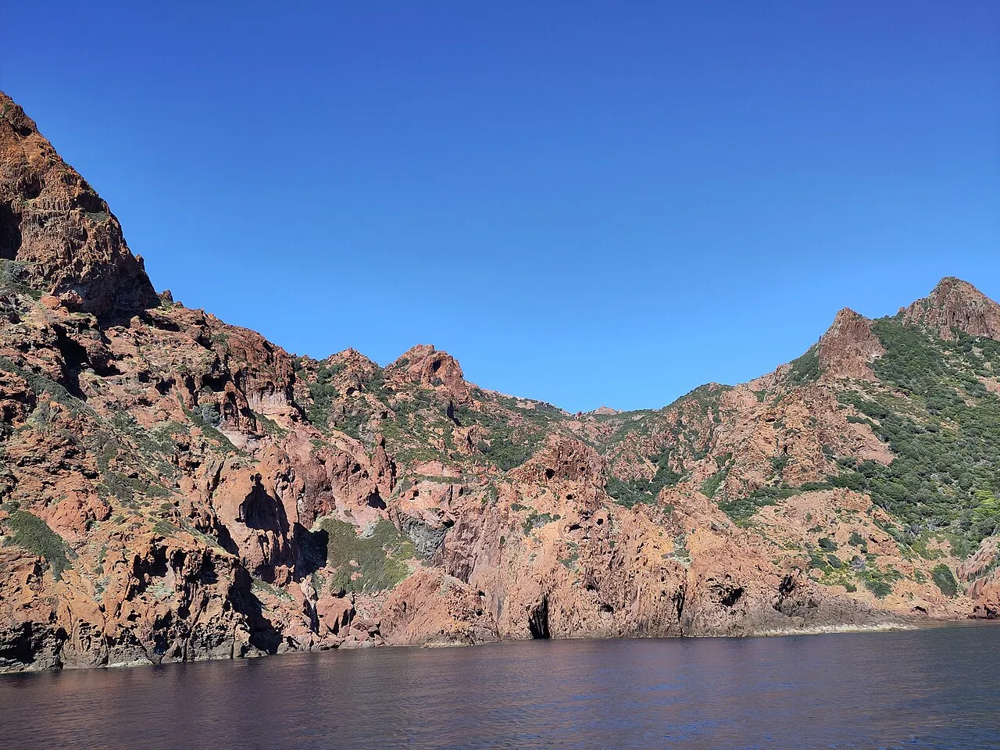

Réserve de Scandola
Corse, France · kayak, snorkeling

Roches volcaniques rouges (rhyolites) dans un site qui porte le label Patrimoine mondial de l’UNESCO. Seule la partie marine de la réserve est ouverte au public.
- Lieu
- Corse, France
- Niveau
- Intermédiaire
- Activités
- kayak, snorkeling
- Type d'eau
- Mer / océan
- Coordonnées
- 42.37, 8.55 (position approximative du secteur)
Dangers à connaître
- Vent et houle peuvent se lever vite le long des falaises.
- Réserve naturelle : pêche de loisir, chasse sous-marine et prélèvements interdits, mouillage de jour seulement.
Le conseil d'Ocean Buddy
Seule la partie marine de la réserve est ouverte au public, et l’apnée y est très réglementée. Renseigne-toi auprès du Parc naturel régional de Corse avant de partir : les règles vont évoluer.
Ouvrir dans Ocean Buddy Télécharger sur l'App Store
Source : Fiche Ocean Buddy · septembre 2026 · à vérifier localement.